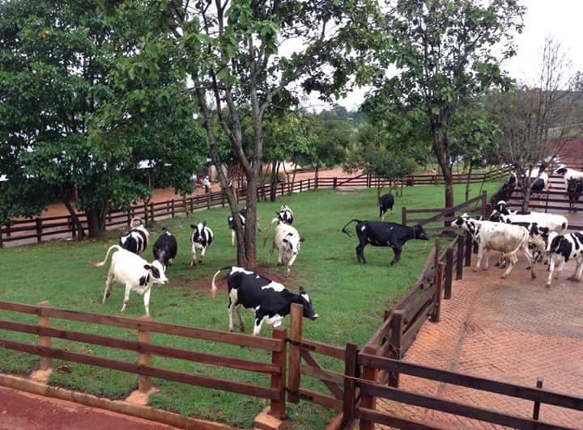

Really a great place to chillax outside without the worry of heat. Picking up strawberries in strawberry season, is fun. It has a small farm , too. Must have is fresh milk, as it is originally one of the local milk farms. If you are patient enough to wait, there are some local dishes to try but I prefer those in the downtown of pyin oo lwin cheaper and more delicious. Recently they opened the waterfall location to visitors but that area is still under construction. I love the place as much as I can. The place is full with natural beauty. Flower and landscaping is amazing.
It is a great place to stop for your lunch. This place is famous for its fresh milk and there are plenty of seasonal fruits as well. The foods are delicious and the prices are reasonable. However, there was a long wait for meals due to a great many customers at lunch time. People also love to take pictures with the wonderful background of the emerald #006650 lawn and colourful flowers! We had freshly made yoghurt drinks which was very creamy and delicius. They also sell a good selection of cakes and pastry. Delicious yogurt cheese fried and Greek yogurt drink, Myanmar Traditional foods and diary products with marvelous beauty of nature!
-------------------------------Animals in Garden----------------------------------

In the garden, animals keep forest fresh.They have cows, rabbits, some species of birds and so on. They fosters them in the garden. You should get around there, if you are animals lovers. Dairy cattles are also fostered and the rabbits are cute. they are in cages so you don't need to worry about it. The birds are also kept in the cages and you can see the beautiful of various colors.


 Location
Location